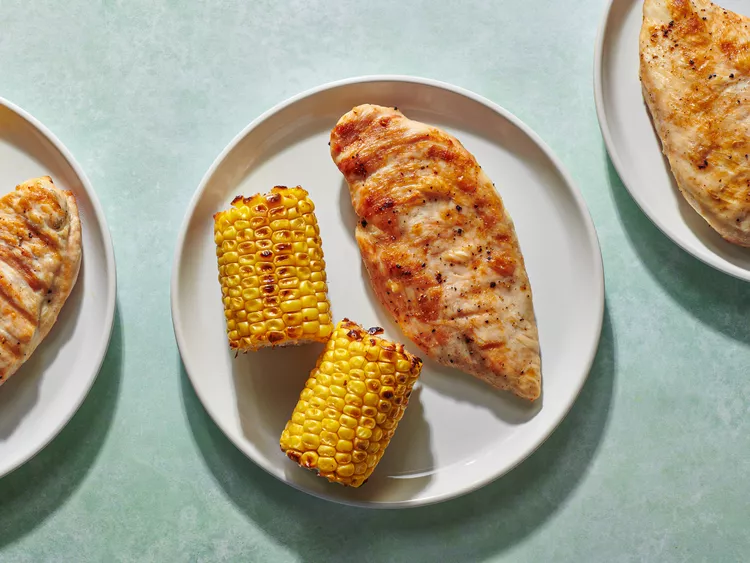

Grilled Chicken

Description:
It's chicken
Ingredients:
- 4 boneless, skinless chicken breast halves (6 to 8 ounces/170 to 225g each), tender removed
- Kosher salt
- 1/4 cup (55g) sugar (if making a wet brine; see note)
- Freshly ground black pepper
- 2 tablespoons (30ml) extra-virgin olive oil
Steps:
- Place 1 chicken breast in a resealable plastic bag or between two pieces of plastic wrap.
Using a meat pounder, rolling pin, or small skillet, pound chicken breast into an even
thickness, about 3/4 inch in height. Repeat with remaining 3 breasts.
- If making a wet brine, dissolve 1/3 cup (80g) kosher salt and 1/4 cup (55g) sugar in
2 quarts (1.9L) water. Place chicken breasts in brine and refrigerate for at least
30 minutes and up to overnight. If making a dry brine, set a wire rack over a rimmed
baking sheet and arrange chicken breasts on it. Sprinkle generously all over with salt
on both sides, then refrigerate, uncovered, for at least 30 minutes and up to overnight.
- Light 1 chimney full of charcoal. When all charcoal is lit and covered with gray ash,
pour out and arrange coals on one side of charcoal grate. Set cooking grate in place,
cover grill, and allow to preheat for 5 minutes. Clean and oil grilling grate.
- If using a wet brine, remove chicken breasts from brine, pat dry with paper towels,
season to taste with salt and pepper, and brush lightly with olive oil.
If using a dry brine, simply season with pepper and brush lightly with olive oil.
Place chicken over hot side of grill and cook until well browned, 3 to 5 minutes.
Flip and continue to cook until second side is browned and chicken is just cooked through,
or until the center registers 150°F/66°C (or 165°F/74°C, if you really want to stick to
FDA guidelines) on an instant-read thermometer. (It can be difficult to take an accurate
temperature on such a thin cut of meat, so make sure to confirm doneness by eye;
it's okay to make a small slit into one of the breasts with a knife to confirm.)
If second side browns before chicken is done, move to cool side of grill, cover,
and let cook until chicken is ready. Remove chicken from grill, let rest 5 minutes,
then serve immediately.